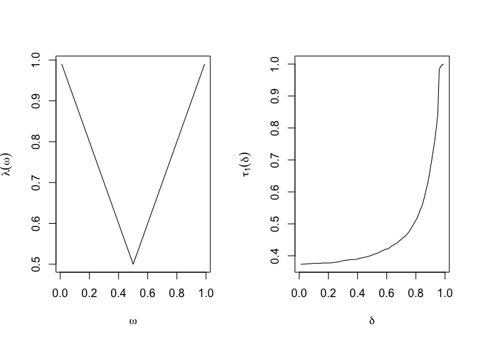

BezELS (Bezier splines for Estimating Limit Sets) performs tail inference for bivariate data with unit exponential marginal distributions. The package implements the methodology from this paper on arXiv.
Installation
You can install the development version of BezELS from GitHub with:
# install.packages("devtools")
devtools::install_github("reetamm/BezELS")Example
The following example generates data from a logistic copula, fits a Bezier spline to the limit set boundary using MCMC, and does tail inference.
library(BezELS)
set.seed(1)
# Generate some data
simdata <- gen_data_exp(n = 500, theta = 0.3, tau = 0.75, copula = 'l')
x <- simdata$x
r <- simdata$r
w <- simdata$w
data_marg_r_0 <- simdata$data_marg_r_0
# Run MCMC to fit a bezier spline to the limit set
samples <- fit_mcmc_bezier( N = data_marg_r_0$N,
r = data_marg_r_0$r,
w = data_marg_r_0$w,
r_0 = data_marg_r_0$r_0,
iters = 1100, burn = 100,
traceplot=F, print.every = 100)
#> 1 0.54 0 0.99 0.5 0.8 0.54 0.99 0 0.52 1 // eta = 0.7801029
#> 100 0.68 0.05 0.92 0.72 0.98 0.1 1 0 0.84 2.03 // eta = 0.876082
#> 200 0.28 0 0.63 1 1 0.79 0.98 0.2 0.66 1.5 // eta = 1
#> 300 0.07 0 0.42 0.89 1 1 0.71 0.4 1 2.22 // eta = 1
#> 400 0.37 0.15 0.4 0.98 1 1 0.29 0.12 0.74 2.84 // eta = 1
#> 500 0.33 0.42 0.47 1 1 0.99 0.15 0 0.27 3.2 // eta = 1
#> 600 0.39 0.5 0.62 0.95 1 1 0.32 0 0.3 2.7 // eta = 1
#> 700 0.45 0.25 0.57 1 1 0.84 0.52 0 0 2.25 // eta = 1
#> 800 0.39 0.56 0.75 1 1 0.87 0.11 0 0.35 2.35 // eta = 1
#> 900 0.22 0.19 0.55 1 1 0.88 0.22 0.14 0.46 2.38 // eta = 1
#> 1000 0.82 0.04 0.2 0.9 1 1 0.58 0.18 0.49 2.63 // eta = 1
#> 1100 0.83 0.37 0.41 0.94 1 1 0.49 0.03 0.52 2.01 // eta = 1
samples <- samples[101:1100,] # drop the burn-in samplesWe’re going to plot the posterior draws in both polar and Euclidean coordinates.
r_0_marg <- simdata$r_0_marg
above_thresh_marg <- simdata$above_thresh_marg
par(mfrow=c(1,2))
medcurve = plot_bezier_polar(mcmc_samples = samples, x = x, r_0_marg = r_0_marg, above_thresh_marg = above_thresh_marg,
copula = 'l', theta = 0.3, thin = 1, plot.fig = T, plottitle = 'Polar coordinates')
plot_bezier_euclidean(mcmc_samples = samples, x = x, theta = 0.3, copula = 'l', plottitle = 'Euclidean coordinates',
thin = 1, above_thresh_marg = above_thresh_marg, plot.truth = T, medcurve = medcurve)
Finally, let’s calculate some metrics.
summary(apply(samples[,1:10], 1, eta_empirical))
#> Min. 1st Qu. Median Mean 3rd Qu. Max.
#> 0.8451 1.0000 1.0000 0.9974 1.0000 1.0000
summary(samples[,11])
#> Min. 1st Qu. Median Mean 3rd Qu. Max.
#> 0.8451 1.0000 1.0000 0.9974 1.0000 1.0000
omega <- seq(0.01,0.99,by = 0.01)
delta <- omega
lambda_omega <- rep(NA,99)
tau1_delta <- rep(NA,99)
for(i in 1:99){
lambda_omega[i] <- median(apply(samples,1,lambda_empirical, omega = omega[i]))
tau1_delta[i] <- median(apply(samples,1,tau_empirical, delta = delta[i]))
}
par(mfrow=c(1,2))
plot(omega,lambda_omega,'l', ylab = expression(lambda(omega)), xlab = expression(omega))
plot(delta,tau1_delta,'l', ylab = expression(tau[1](delta)), xlab = expression(delta))